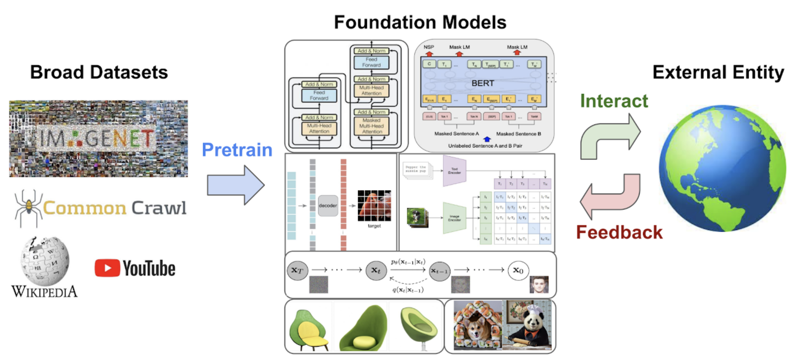

UniSim: Learning Interactive Real-World Simulators
Outstanding Paper Award at ICLR 2024
Generative models trained on internet data have revolutionized how text, image, and video content can be created. Perhaps the next milestone for generative models is to simulate realistic experience in response to actions carried out by humans, robots, and other types of interactive agents. Applications of a real-world simulator range from controllable content creation in games and movies to training embodied agents purely in simulation that can be directly deployed in the real world. In this work, we explore these possibilities around learning a universal simulator (UniSim) of real-world interactions through generative modeling. We first make the important observation that natural datasets available for learning a real-world simulator are often rich along different axes (e.g., rich labeled objects in image data, rich actions in robotics data, and rich movements in navigation data). With careful orchestration of diverse datasets, each providing a different aspect of the overall experience, UniSim can emulate how humans and agents interact with the world by simulating the visual outcome of both high-level instructions such as “open the drawer” and low-level controls such as “move to x, y location” from otherwise static scenes and objects. Use cases for such a real-world simulator are vast. As an example, we use UniSim to simulate interactive experiences to train both high-level vision-language planners and low-level reinforcement learning policies, each of which exhibit significant real-world transfer from purely training in a real-world like simulator. Lastly, we show that other types of intelligence such as video captioning and detection models can also benefit from simulated experiences in UniSim, opening up even wider applications of a real-world simulator.
Long-Horizon Simulations
The true value of UniSim lies in simulating long episodes to enable optimizing decisions through search, planning, optimal control, or reinforcement learning. Below, we demonstrate how UniSim can simulate interactive experiences with long interaction horizons.
Reinforcement Learning with UniSim
UniSim allows effective training of RL agents purely in simulation, which can be directly transferred onto real robot. This can pave the way to training policies without expensive real world intervention. The simulated rollout of the RL policy is shown below:
We then deploy the RL policy trained in UniSim onto the real robot in zero-shot. The real-robot executions are shown below:
Long-Horizon Planning with UniSim
UniSim can be used to train embodied planners purely in simulation. We concatenate long-horizon instructions and generate videos by repeated rollouts in UniSim. The resulting videos and instructions can then be used to train goal conditioned vision-language model (VLM) policies. The simulated plans and zero-shot transfer to real robot are shown below.
Related Resources

The FMDM workshop brings together the decision making community and the foundation models community in vision and language to confront the challenges in decision making at scale.
UniPi casts sequential decision making as a text-conditioned video generation problem. UniPi produces policies that can generalize to combinatorial and multi-task environments and able to utilize broad internet-scale text-video datasets.
 Video Adapter is a framework for generating personalized, stylized, and domain-specific videos by leveraging pretrained black-box text-to-video diffusion models as a probabilistic prior without requiring access to pretrained model weights.
Video Adapter is a framework for generating personalized, stylized, and domain-specific videos by leveraging pretrained black-box text-to-video diffusion models as a probabilistic prior without requiring access to pretrained model weights.
Citation
@article{yang2023learning,
title={Learning Interactive Real-World Simulators},
author={Yang, Mengjiao and Du, Yilun and Ghasemipour, Kamyar and Tompson, Jonathan and Schuurmans, Dale and Abbeel, Pieter},
journal={arXiv preprint arXiv:2310.06114},
year={2023}
}
Generative models trained on internet data have revolutionized how text, image, and video content can be created. Perhaps the next milestone for generative models is to simulate realistic experience in response to actions carried out by humans, robots, and other types of interactive agents. Applications of a real-world simulator range from controllable content creation in games and movies to training embodied agents purely in simulation that can be directly deployed in the real world. In this work, we explore these possibilities around learning a universal simulator (UniSim) of real-world interactions through generative modeling. We first make the important observation that natural datasets available for learning a real-world simulator are often rich along different axes (e.g., rich labeled objects in image data, rich actions in robotics data, and rich movements in navigation data). With careful orchestration of diverse datasets, each providing a different aspect of the overall experience, UniSim can emulate how humans and agents interact with the world by simulating the visual outcome of both high-level instructions such as “open the drawer” and low-level controls such as “move to x, y location” from otherwise static scenes and objects. Use cases for such a real-world simulator are vast. As an example, we use UniSim to simulate interactive experiences to train both high-level vision-language planners and low-level reinforcement learning policies, each of which exhibit significant real-world transfer from purely training in a real-world like simulator. Lastly, we show that other types of intelligence such as video captioning and detection models can also benefit from simulated experiences in UniSim, opening up even wider applications of a real-world simulator.
Long-Horizon Simulations
The true value of UniSim lies in simulating long episodes to enable optimizing decisions through search, planning, optimal control, or reinforcement learning. Below, we demonstrate how UniSim can simulate interactive experiences with long interaction horizons.
Reinforcement Learning with UniSim
UniSim allows effective training of RL agents purely in simulation, which can be directly transferred onto real robot. This can pave the way to training policies without expensive real world intervention. The simulated rollout of the RL policy is shown below:
We then deploy the RL policy trained in UniSim onto the real robot in zero-shot. The real-robot executions are shown below:
Long-Horizon Planning with UniSim
UniSim can be used to train embodied planners purely in simulation. We concatenate long-horizon instructions and generate videos by repeated rollouts in UniSim. The resulting videos and instructions can then be used to train goal conditioned vision-language model (VLM) policies. The simulated plans and zero-shot transfer to real robot are shown below.
Related Resources
Citation
@article{yang2023learning,
title={Learning Interactive Real-World Simulators},
author={Yang, Mengjiao and Du, Yilun and Ghasemipour, Kamyar and Tompson, Jonathan and Schuurmans, Dale and Abbeel, Pieter},
journal={arXiv preprint arXiv:2310.06114},
year={2023}
}